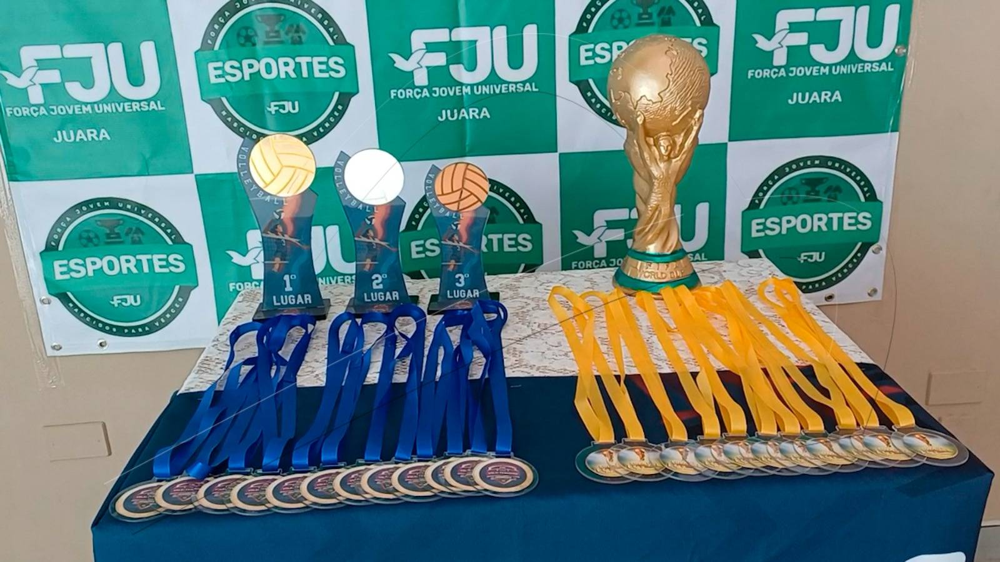

Futebol
Lutas
O Projeto do Esporte faz parte da Força Jovem Universal e tem como principal objetivo aproximar os jovens de Deus por meio da prática esportiva. Além de promover saúde, lazer e união entre os jovens, o projeto oferece um ambiente positivo onde eles desenvolvem valores como disciplina, respeito e trabalho em equipe, ao mesmo tempo em que se afastam das más influências e fortalecem sua fé e relacionamento com Deus.
Cadastre-se